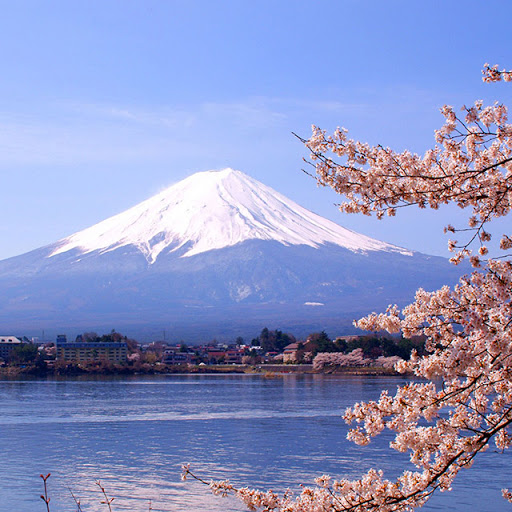

the japan archipelago is full of intresting features.
the japan archipelagos made by four islands on the eastern edge of Asia,
and it is predominantly mountanous:
about three fourth of the national land is muontains.
the highest peak is the mount fuji and it's also the highest volcano

the four main island are called Hokkaido,Honshu, Shikoku
and Kyushu. there are also nearly 4,000 smaller islands!
click here to discover the most beautiful island
the 3 more populated and big cities are kioto, in the honshu island, home to more than 1.45 million people,
tokyo, the capital found in the island of honshu, home to more than 13.96 millions of people,
and Osaka, always found in the island of honshu,home to omore than 19.11 million people.
japan is the 4th biggest island nation in the world, covering a territory of 3,000km2
cities are placed in valley,coasts and plains of the islands, but some villages
are found in muontains but still the 66% of nature and forest are still untouched.
the rare habitat conditions give the opportuninty of seeing some rare endemic species,
like the japanese red-backed vole, and many others
click here for some examples
rivers in japan aren't long, but the speed
of rivers flowing is used for hidroelectricity